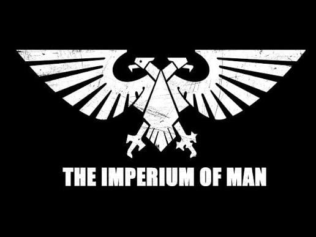

RABENAIVO Lahatra
Avosoa Josoa (étudiant)
- Téléphone: 038 92 770 91
- E-mail:josoarabenaivo@gmail.com
- Facebook: josoa Rabenaivo
- Adresse: Ambodisaha Ambatolampy
5 Andrainjato
CONTACT
- communication
- ésprit d'équipe
- Adaptabilité
APTITUDES
- faire/regarder du sport
- écoter de la musique
- lire des DB
- regarder des films
CENTRE D' INTERET
A PROPOS DE MOI
Etudiant en première annéé d'informatique , motivé et passionné par le développement web , agé de 18ans
qui est né le 27 février 2008 à Ampandrana Besarety(101
Antananarivo).
Fils de RANIVOMBOAHANGY Lala Josoa et de RABENAIVO Franck Aimé.
FORMATION & DIPLOME
COMPETENCE TECHNIQUES
HTML (65%)
CSS (50%)
LANGUES
| types | écrit | parler | français | Assez bien | Assez bien | anglais | Assez bien | Assez bien |
|---|

membre du